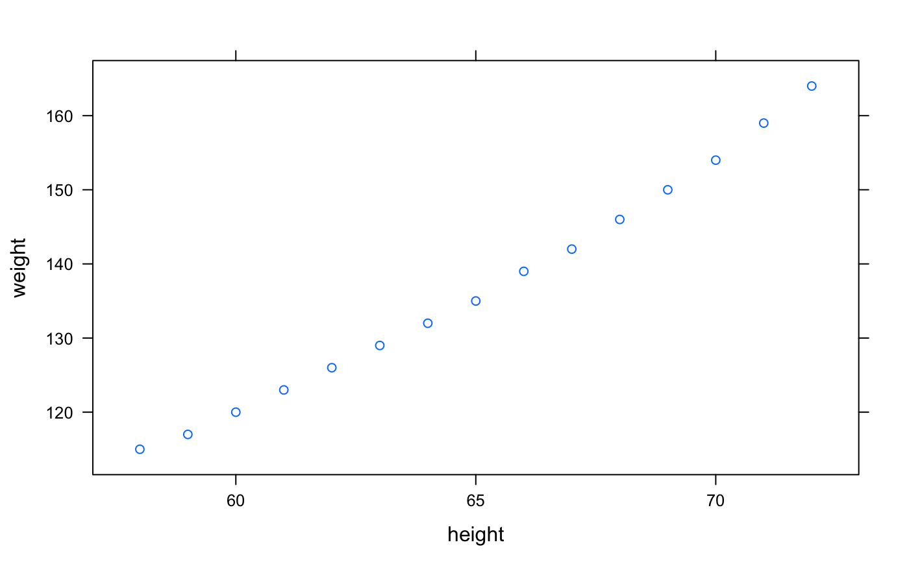
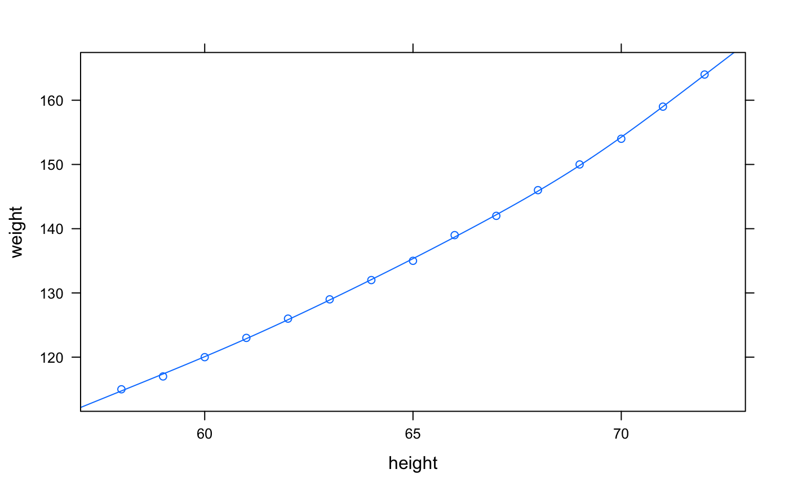
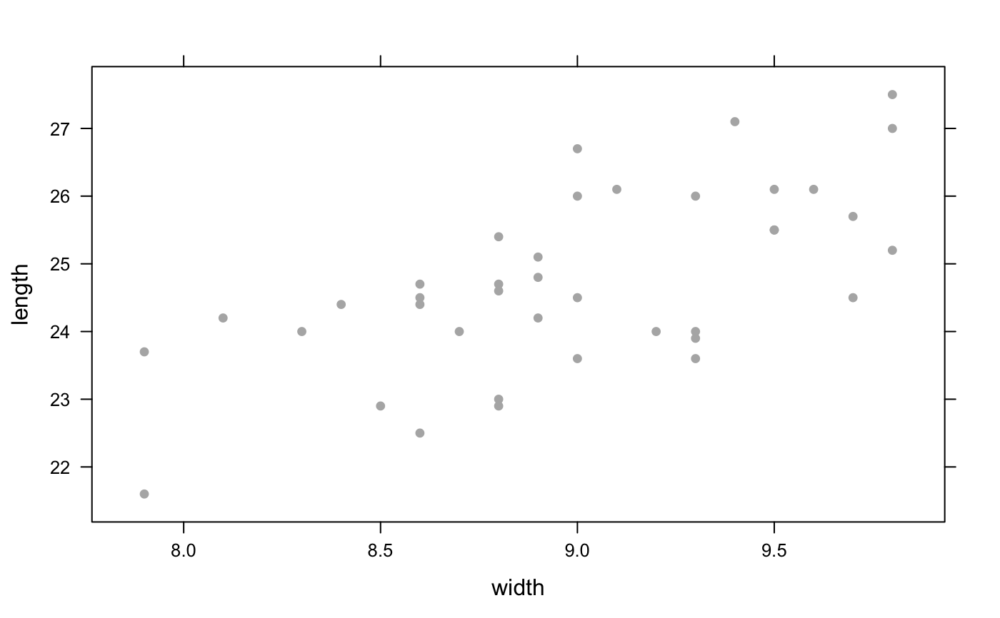
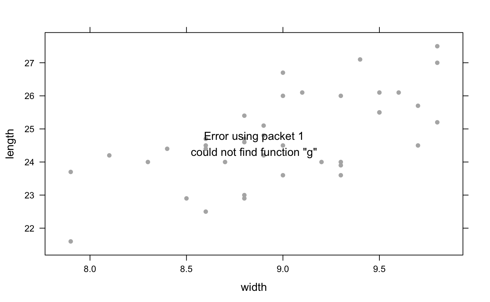
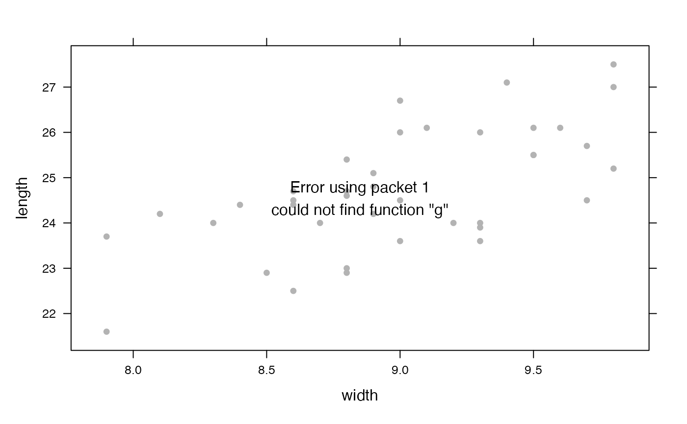

These functions create mathematical functions from data, using splines.
fitSpline(
formula,
data = parent.frame(),
df = NULL,
knots = NULL,
degree = 3,
type = c("natural", "linear", "cubic", "polynomial"),
...
)a formula. Only one quantity is allowed on the left-hand side, the output quantity
a data frame in which formula is evaluated.
degrees of freedom (used to determine how many knots should be used)
a vector of knots
parameter for splines when type is "polynomial".
1 is locally linear, 2 is locally quadratic, etc.
type of splines to use; one of
"linear", "cubic", "natural" (cubic with linear tails, the default),
or "polynomial".
additional arguments passed to spline basis functions
(ns() and bs()).
a function of the explanatory variable
bs() and ns() for the bases used to generate the splines.
f <- fitSpline( weight ~ height, data=women, df=5 )
xyplot( weight ~ height, data=women )

plotFun(f(height) ~ height, add=TRUE)

g <- fitSpline( length ~ width, data = KidsFeet, type='natural', df=5 )
h <- fitSpline( length ~ width, data = KidsFeet, type='linear', df=5 )
xyplot( length ~ width, data = KidsFeet, col='gray70', pch=16)

plotFun(g, add=TRUE, col='navy')

plotFun(h, add=TRUE, col='red')
